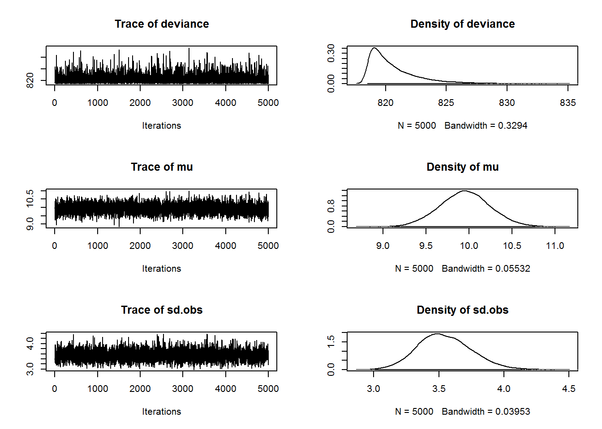

9.2 Linear regression with no covariates
We will start with the simplest time series model possible: linear regression with only an intercept, so that the predicted values of all observations are the same. There are several ways we can write this equation. First, the predicted values can be written as \(E[{y}_{t}] = \mu\). Assuming that the residuals are normally distributed, the model linking our predictions to observed data are written as \[\begin{equation} y_t = \mu + e_t, e_t \sim \,\text{N}(0,\sigma^2) \tag{9.1} \end{equation}\] An equivalent way to think about this model is that instead of the residuals as normally distributed with mean zero, we can think of the data \(y\) as being normally distributed with a mean of the intercept, and the same residual standard deviation: \[\begin{equation} y \sim \,\text{N}(E[y_t],\sigma^2) \tag{9.2} \end{equation}\] Remember that in linear regression models, the residual error is interpreted as independent and identically distributed observation error.
To run the JAGS model, we will need to start by writing the model in JAGS notation. For our linear regression model, one way to construct the model is
# 1. LINEAR REGRESSION with no covariates no covariates, so
# intercept only. The parameters are mean 'mu' and
# precision/variance parameter 'tau.obs'
model.loc = "lm_intercept.txt" # name of the txt file
jagsscript = cat("
model {
# priors on parameters
mu ~ dnorm(0, 0.01); # mean = 0, sd = 1/sqrt(0.01)
tau.obs ~ dgamma(0.001,0.001); # This is inverse gamma
sd.obs <- 1/sqrt(tau.obs); # sd is treated as derived parameter
for(i in 1:N) {
Y[i] ~ dnorm(mu, tau.obs);
}
}
",
file = model.loc)A couple things to notice: JAGS is not vectorized so we need to use for loops (instead of matrix multiplication) and the dnorm notation means that we assume that value (on the left) is normally distributed around a particular mean with a particular precision (1 over the square root of the variance).
The model can briefly be summarized as follows: there are 2 parameters in the model (the mean and variance of the observation error). JAGS is a bit funny in that instead of giving a normal distribution the standard deviation or variance, you pass in the precision (1/variance), so our prior on \(\mu\) is pretty vague. The precision receives a gamma prior, which is equivalent to the variance receiving an inverse gamma prior (fairly common for standard Bayesian regression models). We will treat the standard deviation as derived (if we know the variance or precision, which we are estimating, we automatically know the standard deviation). Finally, we write a model for the data \(y_t\) (Y[i]). Again we use the dnorm distribution to say that the data are normally distributed (equivalent to our likelihood).
The function from the R2jags package that we actually use to run the model is jags(). There is a parallel version of the function called jags.parallel() which is useful for larger, more complex models. The details of both can be found with ?jags or ?jags.parallel.
To actually run the model, we need to create several new objects, representing (1) a list of data that we will pass to JAGS, (2) a vector of parameters that we want to monitor in JAGS and have returned back to R, and (3) the name of our text file that contains the JAGS model we wrote above. With those three things, we can call the jags() function.
jags.data = list(Y = Wind, N = N) # named list of inputs
jags.params = c("sd.obs", "mu") # parameters to be monitored
mod_lm_intercept = jags(jags.data, parameters.to.save = jags.params,
model.file = model.loc, n.chains = 3, n.burnin = 5000, n.thin = 1,
n.iter = 10000, DIC = TRUE)Notice that the jags() function contains a number of other important arguments. In general, larger is better for all arguments: we want to run multiple MCMC chains (maybe 3 or more), and have a burn-in of at least 5000. The total number of samples after the burn-in period is n.iter-n.burnin, which in this case is 5000 samples. Because we are doing this with 3 MCMC chains, and the thinning rate equals 1 (meaning we are saving every sample), we will retain a total of 1500 posterior samples for each parameter.
The saved object storing our model diagnostics can be accessed directly, and includes some useful summary output.
mod_lm_interceptInference for Bugs model at "lm_intercept.txt", fit using jags,
3 chains, each with 10000 iterations (first 5000 discarded)
n.sims = 15000 iterations saved
mu.vect sd.vect 2.5% 25% 50% 75% 97.5% Rhat
mu 9.950 0.283 9.390 9.761 9.947 10.143 10.506 1.001
sd.obs 3.536 0.204 3.161 3.396 3.526 3.665 3.967 1.001
deviance 820.524 1.995 818.590 819.108 819.893 821.315 825.825 1.001
n.eff
mu 15000
sd.obs 14000
deviance 11000
For each parameter, n.eff is a crude measure of effective sample size,
and Rhat is the potential scale reduction factor (at convergence, Rhat=1).
DIC info (using the rule, pD = var(deviance)/2)
pD = 2.0 and DIC = 822.5
DIC is an estimate of expected predictive error (lower deviance is better).The last 2 columns in the summary contain Rhat (which we want to be close to 1.0), and neff (the effective sample size of each set of posterior draws). To examine the output more closely, we can pull all of the results directly into R,
attach.jags(mod_lm_intercept)The following object is masked _by_ .GlobalEnv:
muAttaching the R2jags object allows us to work with the named parameters directly in R. For example, we could make a histogram of the posterior distributions of the parameters mu and sd.obs with the following code,
# Now we can make plots of posterior values
par(mfrow = c(2, 1))
hist(mu, 40, col = "grey", xlab = "Mean", main = "")
hist(sd.obs, 40, col = "grey", xlab = expression(sigma[obs]),
main = "")Figure 9.1: Plot of the posteriors for the linear regression model.
Finally, we can run some useful diagnostics from the coda package on this model output. We have written a small function to make the creation of mcmc lists (an argument required for many of the diagnostics). The function
createMcmcList = function(jagsmodel) {
McmcArray = as.array(jagsmodel$BUGSoutput$sims.array)
McmcList = vector("list", length = dim(McmcArray)[2])
for (i in 1:length(McmcList)) McmcList[[i]] = as.mcmc(McmcArray[,
i, ])
McmcList = mcmc.list(McmcList)
return(McmcList)
}Creating the MCMC list preserves the random samples generated from each chain and allows you to extract the samples for a given parameter (such as \(\mu\)) from any chain you want. To extract \(\mu\) from the first chain, for example, you could use the following code. Because createMcmcList() returns a list of mcmc objects, we can summarize and plot these directly. Figure 9.2 shows the plot from plot(myList[[1]]).
myList = createMcmcList(mod_lm_intercept)
summary(myList[[1]])
Iterations = 1:5000
Thinning interval = 1
Number of chains = 1
Sample size per chain = 5000
1. Empirical mean and standard deviation for each variable,
plus standard error of the mean:
Mean SD Naive SE Time-series SE
deviance 820.541 2.0350 0.028779 0.030093
mu 9.952 0.2854 0.004037 0.004037
sd.obs 3.539 0.2041 0.002886 0.002886
2. Quantiles for each variable:
2.5% 25% 50% 75% 97.5%
deviance 818.587 819.099 819.888 821.386 826.111
mu 9.389 9.754 9.949 10.151 10.508
sd.obs 3.158 3.406 3.529 3.666 3.968plot(myList[[1]])
Figure 9.2: Plot of an object output from \(\texttt{creatMcmcList}\).
For more quantitative diagnostics of MCMC convergence, we can rely on the coda package in R. There are several useful statistics available, including the Gelman-Rubin diagnostic (for one or several chains), autocorrelation diagnostics (similar to the ACF you calculated above), the Geweke diagnostic, and Heidelberger-Welch test of stationarity.
# Run the majority of the diagnostics that CODA() offers
library(coda)
gelmanDiags = gelman.diag(createMcmcList(mod_lm_intercept), multivariate = F)
autocorDiags = autocorr.diag(createMcmcList(mod_lm_intercept))
gewekeDiags = geweke.diag(createMcmcList(mod_lm_intercept))
heidelDiags = heidel.diag(createMcmcList(mod_lm_intercept))